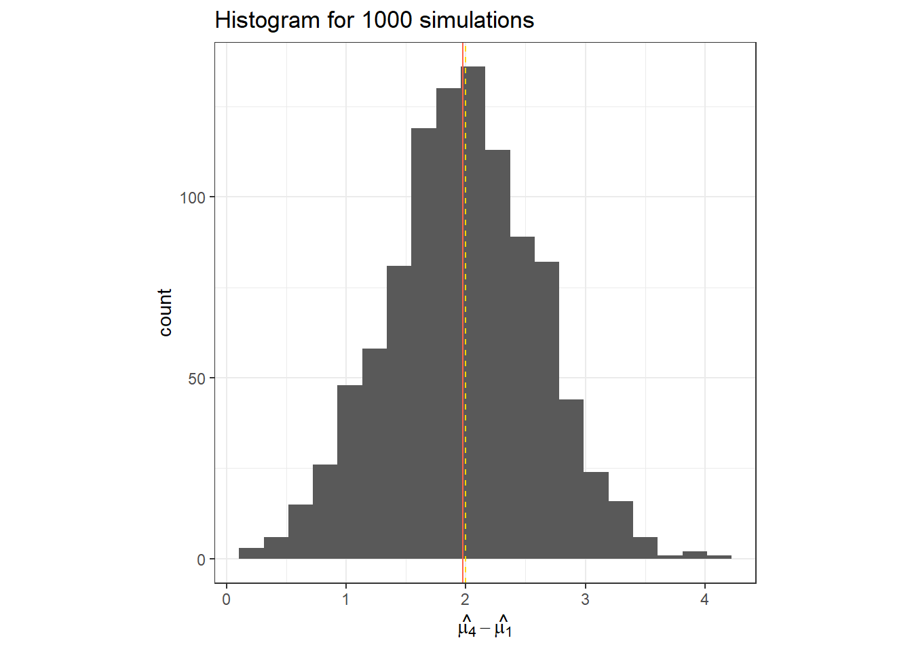

Day 19 Miscellaneous
19.2 Statistical models

Figure 19.1: Mindmap
- Why we need statistical models
- On Exactitude in Science (J.L. Borges)
“What a useful thing a pocket-map is!” I remarked.
“That’s another thing we’ve learned from your Nation,” said Mein Herr, “map-making. But we’ve carried it much further than you. What do you consider the largest map that would be really useful?”
“About six inches to the mile.”
“Only six inches!” exclaimed Mein Herr. “We very soon got to six yards to the mile. Then we tried a hundred yards to the mile. And then came the grandest idea of all! We actually made a map of the country, on the scale of a mile to the mile!”
“Have you used it much?” I enquired.
“It has never been spread out, yet,” said Mein Herr: “the farmers objected: they said it would cover the whole country, and shut out the sunlight! So we now use the country itself, as its own map, and I assure you it does nearly as well.”
from Lewis Carroll, Sylvie and Bruno Concluded, Chapter XI, London, 1893
19.2.1 General linear model
\[\mathbf{y} \sim N(\mathbf{X}\boldsymbol{\beta}, \Sigma),\]
We know that
- \(\hat{\boldsymbol{\beta}}_{MLE} = \hat{\boldsymbol{\beta}}_{LSE} = (\mathbf{X}^T\mathbf{X})^{-1}\mathbf{X}^T\mathbf{y}\)
- \(\hat{\boldsymbol{\beta}} \sim N(\boldsymbol{\beta}, \frac{\sigma^2}{(n-1)s^2_x})\)
- Unbiasedness
- Estimation uncertainty versus Prediction uncertainty
- Invariance property of MLEs
- Bias-variance tradeoff
- Confidence interval: \(CI_{95\%} = \hat{\beta} \pm t_{df} \cdot s.e.(\hat{\beta})\)
- Hypothesis tests
- t-tests:
- \(P(t^\star > t_{dfe, 1 - \alpha/2})\), where
- \(t^\star = \frac{\hat\theta}{s.e.(\hat\theta)}\), and (for example)
- \(s.e.(\hat{\beta}) = \frac{\hat{\sigma}}{s_x \sqrt{n-1}}\) (for a CRD)
- \(s.e.(\hat\mu_2 - \hat\mu_1) = \sqrt{s.e.(\hat\mu_2)^2 + s.e.(\hat\mu_1)^2 + 2 \text{cov}(\hat\mu_2, \hat\mu_1)}\)
- Connection between CIs and t-tests
- F-tests:
- \(P(F^\star > F_{dfn,dfd, 1 - \alpha})\), where
- \(F^\star = \frac{SS_\theta}{df}\)
- t-tests:
- Power: \(Power_D = 1-\beta\)
- A justification to 80% Power [link]

Figure 19.2: Types of errors
19.3 Illustrating this with a simulation
19.3.1 What is a simulation?
Simulations are helpful tools in statistics to illustrate and study data generating processes in statistics and evaluate methods.
Here is how one iteration would go:
# Set the 'true values'
mu_0 <- 8
t_i <- c(0, 0, 0.5, 2)
sigma <- 1
# generate the fake data
set.seed(42)
fake_df <-
# create the conditions the data will be generated
expand.grid(treatment = factor(1:length(t_i)),
rep = factor(1:5)) |>
# create a column for the expected value
mutate(mu_i = mu_0 + t_i[treatment],
# create a column for y = E(y) + residual
y = mu_i + rnorm(n = n(), 0, sd =sigma))
fake_df %>%
ggplot(aes(treatment, y))+
geom_point(aes(fill = treatment), shape =21)+
geom_point(aes(y = mu_i), fill = "gold", shape =22, size = 4, alpha = .4)+
scico::scale_fill_scico_d()+
theme_pubclean()##
## Call:
## lm(formula = y ~ treatment, data = fake_df)
##
## Residuals:
## Min 1Q Median 3Q Max
## -2.5616 -0.4196 0.2055 0.7400 1.5943
##
## Coefficients:
## Estimate Std. Error t value Pr(>|t|)
## (Intercept) 8.4241 0.5617 14.998 7.65e-11 ***
## treatment2 -1.1579 0.7943 -1.458 0.16427
## treatment3 0.1970 0.7943 0.248 0.80724
## treatment4 2.5321 0.7943 3.188 0.00572 **
## ---
## Signif. codes: 0 '***' 0.001 '**' 0.01 '*' 0.05 '.' 0.1 ' ' 1
##
## Residual standard error: 1.256 on 16 degrees of freedom
## Multiple R-squared: 0.587, Adjusted R-squared: 0.5095
## F-statistic: 7.58 on 3 and 16 DF, p-value: 0.00224719.3.2 Simulation with 3 repetitions
# Set the 'true values'
mu_0 <- 8
t_i <- c(0, 0, 0.5, 2)
sigma <- 1
# set the conditions to generate fake data iteratively
n_sims <- 1000
n_reps <- 3
# create the objects to store the estimates
hat_t_2 <- numeric(n_sims)
hat_t_4 <- numeric(n_sims)
p_value_t2 <- numeric(n_sims)
p_value_t4 <- numeric(n_sims)
CI_t2 <- matrix(ncol = 2, nrow = n_sims)
CI_t4 <- matrix(ncol = 2, nrow = n_sims)
# simulation
set.seed(2)
for (i in 1:n_sims) {
# create a fake dataset for those conditions
fake_df <- expand.grid(treatment = factor(1:4),
rep = factor(1:n_reps)) |>
# generate fake data
mutate(y = mu_0 + t_i[treatment] + rnorm(n = n(), 0, sd =sigma))
# fit model to fake data
m <- lm(y ~ treatment, data = fake_df)
# retrieve estimates
hat_t_2[i] <- coef(m)[2]
hat_t_4[i] <- coef(m)[4]
# retrieve p-values
p_value_t2[i] <- summary(m)$coefficients[2,"Pr(>|t|)"]
p_value_t4[i] <- summary(m)$coefficients[4,"Pr(>|t|)"]
# retrieve CI
CI_t2[i,] <- confint(m)[2,]
CI_t4[i,] <- confint(m)[4,]
}data.frame(hat_t_2) %>%
ggplot(aes(x = hat_t_2))+
geom_histogram(bins = 20)+
geom_vline(col = "tomato", xintercept = mean(hat_t_2))+
geom_vline(linetype =2, col = "gold", xintercept = t_i[2])+
labs(x = TeX("$\\hat{\\mu_2}-\\hat{\\mu_1}$"),
title = "Histogram for 1000 simulations")+
theme_bw()+
theme(aspect.ratio = 1)data.frame(hat_t_4) %>%
ggplot(aes(x = hat_t_4))+
geom_histogram(bins = 20)+
geom_vline(col = "tomato", xintercept = mean(hat_t_4))+
geom_vline(linetype =2, col = "gold", xintercept = t_i[4])+
labs(x = TeX("$\\hat{\\mu_4}-\\hat{\\mu_1}$"),
title = "Histogram for 1000 simulations")+
theme_bw()+
theme(aspect.ratio = 1)
## [1] 0.057## [1] 0.592data.frame(CI_t2) %>%
rowid_to_column(var = "iter") %>%
ggplot(aes(X1, iter))+
geom_errorbarh(aes(xmin = X1, xmax = X2,
color = (t_i[2]>= X1 & t_i[2] <= X2)))+
geom_vline(linetype =2, col = "gold", xintercept = t_i[2], size = 2)+
labs(x = TeX("$\\hat{\\mu_2}-\\hat{\\mu_1}$"),
title = "CI for 1000 simulations")+
geom_text(label =paste(mean(t_i[2]>= CI_t2[,1] & t_i[2] <= CI_t2[,2])*100,
"% of the CIs contain the true value"), x = 0, y =900)+
scale_color_manual(values = c("tomato", "lightgreen"))+
theme_bw()+
labs(color = "CI contains true value")+
theme(aspect.ratio = 1)
data.frame(CI_t4) %>%
rowid_to_column(var = "iter") %>%
ggplot(aes(X1, iter))+
geom_errorbarh(aes(xmin = X1, xmax = X2,
color = (t_i[4]>= X1 & t_i[4] <= X2)))+
geom_vline(linetype =2, col = "gold", xintercept = t_i[4], size = 2)+
labs(x = TeX("$\\hat{\\mu_4}-\\hat{\\mu_1}$"),
title = "CI for 1000 simulations")+
scale_color_manual(values = c("tomato", "lightgreen"))+
geom_text(label =paste(mean(t_i[4]>= CI_t4[,1] & t_i[4] <= CI_t4[,2])*100,
"% of the CIs contain the true value"), x = 2, y =900)+
theme_bw()+
labs(color = "CI contains true value")+
theme(aspect.ratio = 1)19.3.3 Simulation with 5 repetitions
Take a look at the range of values that are estimated, and the power.
# Set the 'true values'
mu_0 <- 8
t_i <- c(0, 0, 0.5, 2)
sigma <- 1
# set the conditions to generate fake data iteratively
n_sims <- 1000
n_reps <- 5
# create the objects to store the estimates
hat_t_2 <- numeric(n_sims)
hat_t_4 <- numeric(n_sims)
p_value_t2 <- numeric(n_sims)
p_value_t4 <- numeric(n_sims)
# simulation
set.seed(83)
for (i in 1:n_sims) {
fake_df <- expand.grid(treatment = factor(1:4),
rep = factor(1:n_reps)) |>
mutate(mu_i = mu_0 + t_i[treatment],
y = mu_i + rnorm(n = n(), 0, sd =sigma))
m <- lm(y ~ treatment, data = fake_df)
hat_t_2[i] <- coef(m)[2]
hat_t_4[i] <- coef(m)[4]
p_value_t2[i] <- summary(m)$coefficients[2,"Pr(>|t|)"]
p_value_t4[i] <- summary(m)$coefficients[4,"Pr(>|t|)"]
}data.frame(hat_t_2) %>%
ggplot(aes(x = hat_t_2))+
geom_histogram(bins = 20)+
geom_vline(col = "tomato", xintercept = mean(hat_t_2))+
geom_vline(linetype =2, col = "gold", xintercept = t_i[2])+
labs(x = TeX("$\\hat{\\mu_2}-\\hat{\\mu_1}$"),
title = "Histogram for 1000 simulations")+
theme_bw()+
theme(aspect.ratio = 1)
data.frame(hat_t_4) %>%
ggplot(aes(x = hat_t_4))+
geom_histogram(bins = 20)+
geom_vline(col = "tomato", xintercept = mean(hat_t_4))+
geom_vline(linetype =2, col = "gold", xintercept = t_i[4])+
labs(x = TeX("$\\hat{\\mu_4}-\\hat{\\mu_1}$"),
title = "Histogram for 1000 simulations")+
theme_bw()+
theme(aspect.ratio = 1)
## [1] 0.058## [1] 0.83719.3.4 Demonstrating the bias-variance tradeoff
# Set the 'true values'
mu_0 <- 8
# treatment effect
t_i <- c(0, 0, 0.5, 2)
# effect of covariate x1
beta1 <- .1
# effect of covariate x2
beta2 <- .15
sigma <- 1
# set the conditions to generate fake data iteratively
n_sims <- 1000
n_reps <- 3
# create the objects to store the estimates
hat_t_2_r <- numeric(n_sims)
hat_t_2_f <- numeric(n_sims)
y_pred_r <- numeric(n_sims)
y_pred_f <- numeric(n_sims)
# simulation
set.seed(33)
for (i in 1:n_sims) {
fake_df <- expand.grid(treatment = factor(1:4),
rep = factor(1:n_reps),
x1 = 1:5,
x2 = 1:6) |>
mutate(mu_i = mu_0 + t_i[treatment] + x1*beta1 + x2*beta2,
y = mu_i + rnorm(n = n(), 0, sd =sigma))
m_reduced <- lm(y ~ treatment, data = fake_df)
m_full <- lm(y ~ treatment + x1 + x2, data = fake_df)
hat_t_2_r[i] <- coef(m_reduced)[2]
hat_t_2_f[i] <- coef(m_full)[2]
y_pred_r[i] <- predict(m_reduced)[1]
y_pred_f[i] <- predict(m_full)[1]
}data.frame(y_pred_r) %>%
ggplot(aes(x = y_pred_r))+
geom_histogram(bins = 30)+
geom_vline(col = "tomato", xintercept = mean(y_pred_r))+
geom_vline(linetype =2, col = "gold", xintercept = fake_df$mu_i[1])+
labs(x = TeX("$\\hat{\\mu_1}$"),
title = "Histogram for 1000 simulations")+
theme_bw()+
coord_cartesian(xlim = c(7.75, 9.25))+
theme(aspect.ratio = 1)data.frame(y_pred_f) %>%
ggplot(aes(x = y_pred_f))+
geom_histogram(bins = 30)+
geom_vline(col = "tomato", xintercept = mean(y_pred_f))+
geom_vline(linetype =2, col = "gold", xintercept = fake_df$mu_i[1])+
labs(x = TeX("$\\hat{\\mu_1}$"),
title = "Histogram for 1000 simulations")+
theme_bw()+
coord_cartesian(xlim = c(7.75, 9.25))+
theme(aspect.ratio = 1)